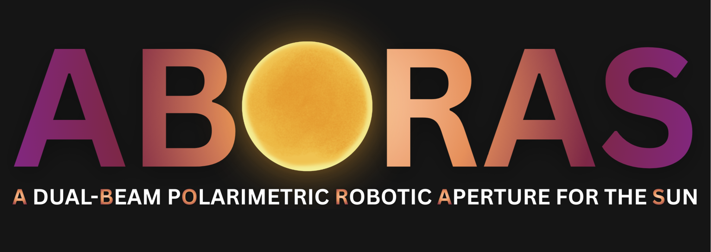
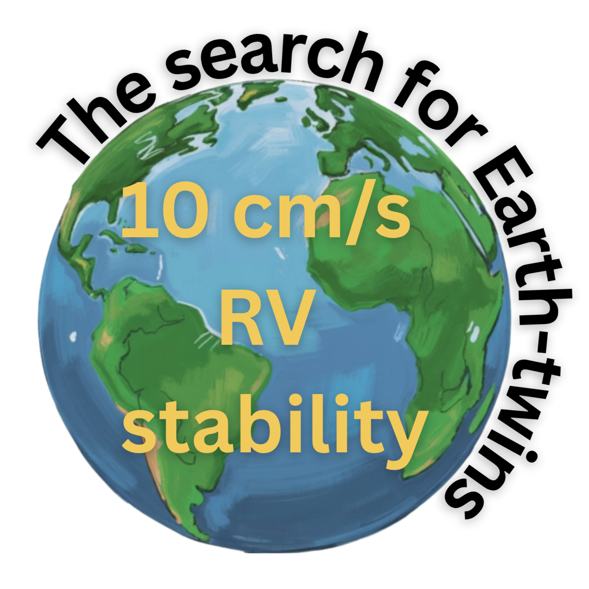
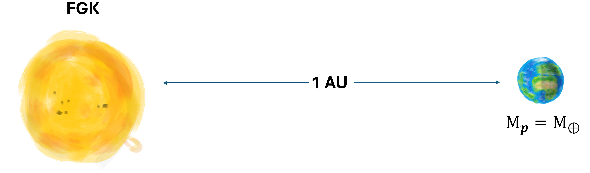
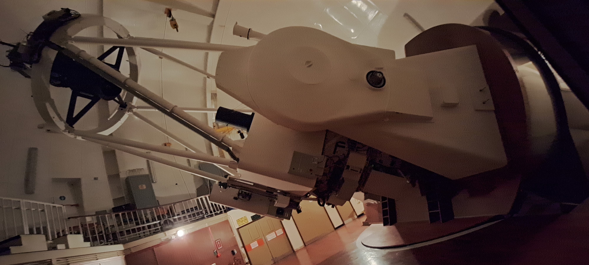
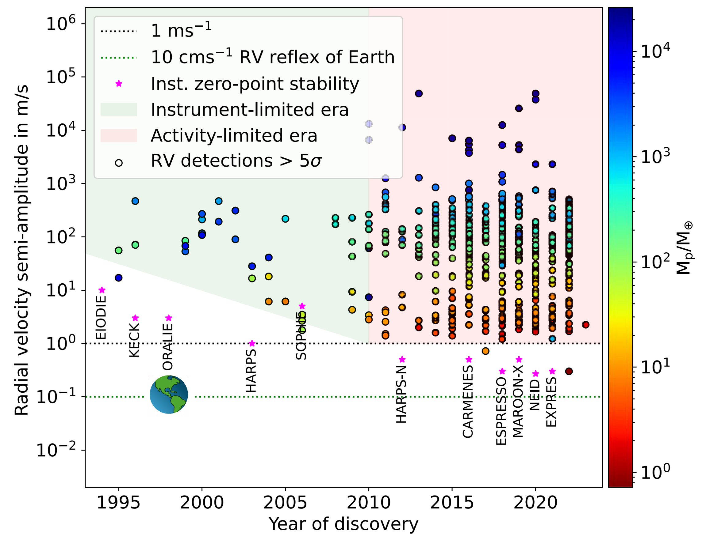
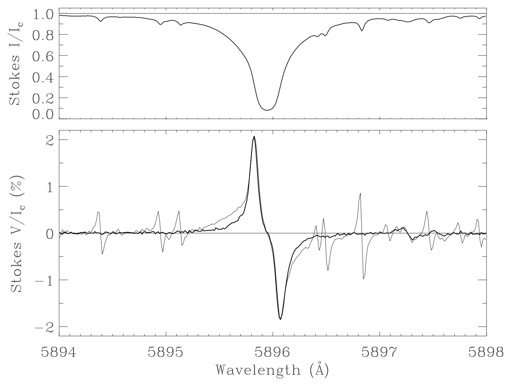
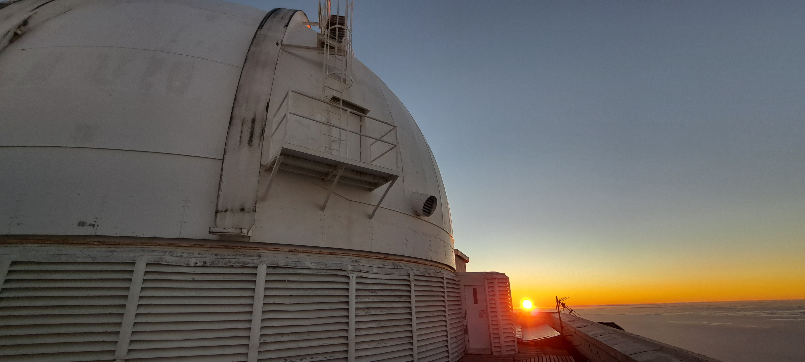

The installation of the third-generation High-Accuracy Radial velocity Planet Searcher (HARPS3), on the 2.54-m Isaac Newton Telescope in La Palma (see Figure 2) marks the beginning of the next era of ground-based exoplanet detection using radial velocities (RVs).
HARPS3 will be able to measure radial velocities with precisions of 10 cm/s.
The significance of this number is that if an alien observer lightyears away from us were to view our Solar system with HARPS3, they would have the required precision to detect the Earth!
HARPS3 is the new powerhouse instrument of the aptly named Terra Hunting Experiment, or THE.
The THE will have half of all observing time with HARPS3 for a period of 10 years, allowing for an extended RV survey in the coming years.

Understanding stellar variability with polarimetric Sun-as-a-star observations
Overview of ABORAS
Polarimetric observations of the Sun are key to understanding magnetic variability in Solar-type stars, currently the limiting factor in small exoplanet detection.
We often do not have the required cadence and signal-to-noise to study distant stars, whose signals are also likely entangled with planetary signals.
ABORAS takes full advantage of the HARPS3 spectrograph, obtaining unresolved stable spectropolarimetric data of the Solar disc for the first time.
This will improve our understanding of stellar activity and the line-of-sight magnetic field and inform mitigation techniques.
With the 10 cm/s stability of HARPS3, these polarimetric observations will give us a better understanding of the activity of FGK stars– paving the way for the discovery of Earth-sized planets around Solar-type stars.
ABORAS will serve as a benchmark for small exoplanet detection and stellar activity mitigation.
Why the name?
ABORAS is named after Abora, the solar deity of the original inhabitants of La Palma - the Guanches.
The acronym itself describes the dual-beam method of polarimetry employed by the instrument, and references its robotic nature as a solar telescope for the HARPS3 (or "RoboHARPS") instrument.
The search for Earth-twins


What's the point?
For millennia, the planets within our Solar System were the sum total of planets in the Universe from a human perspective.
Mercury, Venus, Earth, Mars, Jupiter, Saturn, Uranus, Neptune (and Pluto of course) - each planet is vastly different in size, composition, colour, profile - the list goes on.
And yet, the Sun is but one star in hundreds of billions in the Milky Way alone.
Our galaxy itself is one of perhaps trillions.
The mind is led by these facts to attempt to conceptualise the diversity of planets in orbit of other stars out there in the Universe.
These extra-solar planets (exoplanets) have been the stuff of science fiction for decades.
In the scientific world, the first exoplanet was discovered in 1992 around a rapidly rotating star called a pulsar.
The first planet orbiting a star like the Sun was found not long after in 1995.
51 Peg b (Mayor & Queloz, 1995) is a Jupiter-sized planet which orbits its host star once every 4 days.
As of March 2026, more than 6,000 exoplanets have been discovered with the number increasing every day.
There are three main reasons that astronomers have devoted time to the search for exoplanets.
The first is to compare the planets we know in our Solar System with those around other stars.
Is our Solar System unique? Is the Earth unique? Are we unique? Are there planets arranged in the same way as our Solar System?
How do we compare with the rest of creation?
The second point is to understand how planets form.
Understanding this physics helps us learn more about the physical laws which govern the Universe, and understand more about our place within it.
The third, of course, is to search for evidence of life beyond our own planet and measure the conditions and frequency which life arises.
The Isaac Newton Telescope
HARPS3 will be mounted on the 2.54 m Isaac Newton Telescope (INT) at the Roque de los Muchachos Observatory in La Palma. The telescope saw first light in England in 1965, before being shipped to the Canary Islands and upgraded. It's second 'first light' was in Febuary 1984, where it's observations included the Crab and Orion nebulae. The telescope has a polar-disc/fork type of equatorial mount. The disc is famously at an angle to the ground due to the telescopes re-housing, giving the INT a unique profile.
In June 2024, traditional 'visitor mode' observations were ceased as upgrades commenced to turn the telescope fully robotic. In the summer of 2026, the HARPS3 instrument will be installed and the telescope's new role as a planet hunter will be underway.

Stellar variability: The greatest hurdle
Currently, the greatest hinderance in detecting and characterising Earth-twins is stellar variability. The advent of high-resolution spectrographs such as ESPRESSO and the state-of-the-art HARPS3 brings 10 cm/s stability within reach (see Figure 4). Signals from stars like the Sun are an order of magnitude greater than this. The detection plot (Figure 4) shows the 1 m/s cutoff of detected exoplanets despite improvements in instrumentation. This horizontal cutoff is due to the effects of these signals. To mitigate these effects, the activity of Sun-like stars must be studied, and which better than our own Sun? Observing the Sun gives us high-cadence, high signal-to-noise data (such as that in Figure 3) which is free from planetary signals. Previous iterations (HARPS, HARPS-N) have incorporated Solar observations into their programs, making use of the instruments’ extraordinary resolving power.
What causes stellar variability?
Stellar activity is the main obstacle in the detection of small planets using RV techniques.
The Sun is magnetically active, and has multiple features on its surface which cause these variations.
These include granules, supergranules, spots, faculae, and plages.
Granules are caused by the convective motion of hot gas, leading to an effect called convective blueshift.
Spots and faculae are caused my variations in the magnetic field, creating dimmer and brighter regions on the surface.
Granulation, supergranulation, and magnetic features all cause RV variations on different timescales and magnitudes.


Why polarimetry?
ABORAS will use polarimetric observations of the Sun to better understand stellar activity by measuring the signed magnetic flux. By obtaining measurements of the magnetic activity and radial velocity fluctuations, the link between stellar activity and radial velocity variations can be studied.
Studying magnetic flux
The variation of unsigned magnetic flux is a good tracer of stellar activity (see e.g. Haywood et al. 2022; Lienhard et al. 2023). These measurements rely on assumptions and proxies. The signed magnetic flux is measured directly from polarimetric observations, and has been shown to be a good tracer of the stellar rotation period (Rescigno et al. 2024). By measuring the extent to which sunlight is circularly polarised, fluctuations in the longitudinal magnetic field can be measured. The polarimetric components of ABORAS are designed to measure this via the Stokes V parameter, which is described below.
Stokes profiles
The polarimetric properties of light are completely described by the four Stokes parameters (Stokes 1852). These parameters are commonly referred to using the symbols I, Q, U, and V. The Q and U parameters refer to the degree of linear polarisation of light. The I parameter refers to the intensity of light. A Stokes I spectrum is equivalient to a 'normal' intensity spectrum that one would observe with a spectrograph without the presence of polarimetric optics (see the top plot of Figure 5). The Stokes V parameter describes the degree of circular polarisation - that is the difference between right-hand and left-hand circularly polarised light.

ABORAS will make use of HARPS3 during the daylight hours, taking polarimetric data of the Sun. The Sun is free of planetary signals (excluding the potentially elusive "planet nine"), so can be used as a template for activity in stars of types F, G, and K. By measuring the line of sight magnetic field of the Sun and coupling these data with RV observations of the Sun, the physics of stellar activity can be better understood and inform mitigation techniques. Ultimately, ABORAS will contribute to our planet-hunting toolkit - bringing small, rocky planets around sunlike stars into view.

ABORAS setup and components
Quarter wave-plate
Figure 5 shows the light path of sunlight through the main components of ABORAS. Circularly polarised sunlight enters the ABORAS aperture and is converted into linearly polarised light by the quarter-waveplate. The quarter-waveplate is rotated through 360° to gain the observations required for full Stokes V characterisation. Four sub-exposures are taken at the angles 45°, 225°, 135°, and 315°.
Foster prism
The linearly polarised light is then split by the Foster prism. This consists of two quartz crystals which are joined together. The birefringent material causes the beam to split into two beams with orthogonal polarisation (making ABORAS a "dual-beam" polarimeter). These beams are then focused into separate integrating spheres.
Integrating spheres
The integrating spheres scramble the light from the image, creating a uniform Solar disc. By doing this we obtain an unresolved full disc of the Sun, allowing us to treat the Sun as a star. This Sun-as-a-star image is transferred to the two HARPS3 ports via two optical fibres. Note that this means that it is not possible to have a continuous wavelength reference when using HARPS3 with ABORAS. In total, there are eight sub-exposures (four from each fibre) passed into HARPS3 per observation. These data are then combined to create Stokes I (intensity) and V (degree of circular polarisation) profiles.
